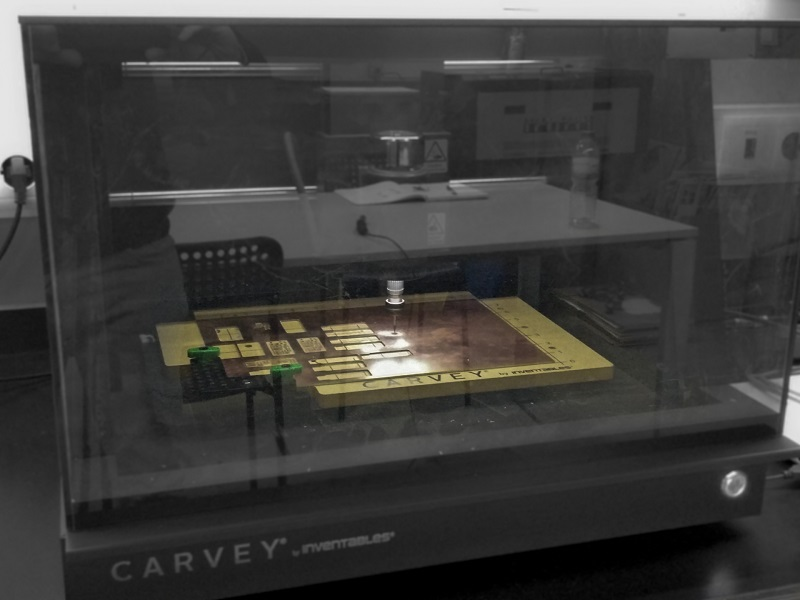
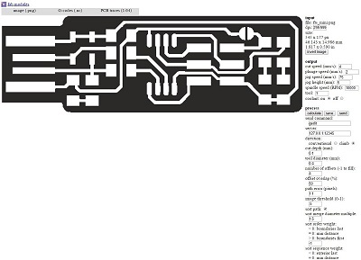
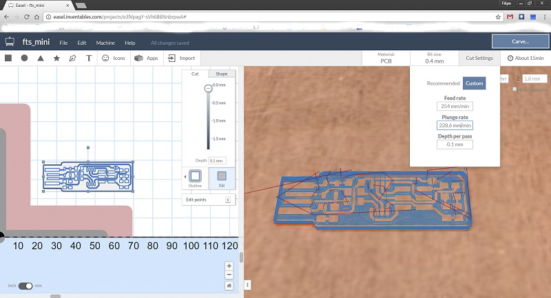
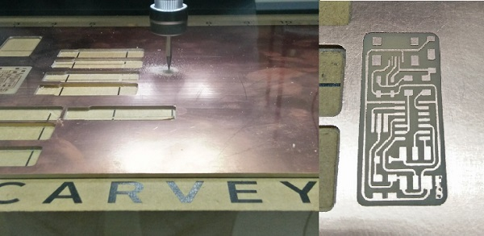
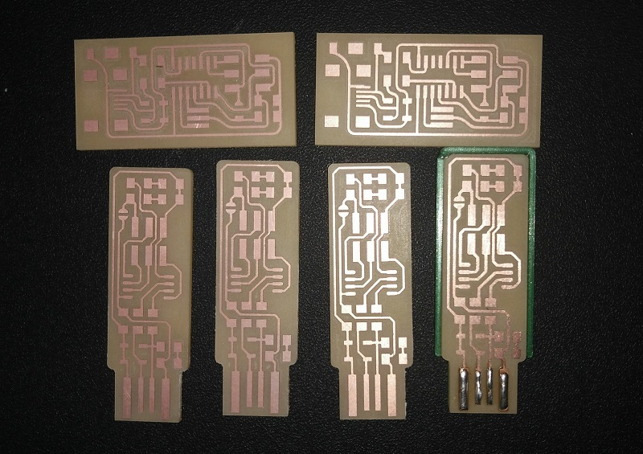

#04. Electronics Production
Technology
For this week we were asked to produce a FabIPS and for that we could use a certain number of diferent techologies. In our case at the FCT FabLab we can only use machining and for that we have a Shapeoko 2 and a Carvey both by Inventables. The first one was a kit bought a couple of years a go and is a very simple equipment with 3 axis controlled by an arduino with a gshield. On the other hand we a month old Carvey, wish is the machine we ended up using to produce our pcbs.
From digital to physical
Started with some experimenting since i never used the Carvey before so in order to make it right i started with a little testing first. After some advice from our local instructor Luís Carvão we decided to simply go for it and carve! First and very important, the Carvey uses a specific app, the Easel, its a very simple, very user friendly app where you can either draw directly on the browser app or you can import an SVG, Gcode or trace an image. We started by trying importing the Gcode and to generate the desired code we used Fab Modules as follow:

Imported the Gcode on Easel but unfortunatelly we got into some code problems as the exported gcode couldn't be recognized by the app and kept on giving errors, so decided to use the trace from the app directly on the png. The outcome from this wasn't detailed enough for what we needed since the tracks ended up beeing mixed and not as like the png. Lastly, we tryed the svg import and that did the trick.
To get to the svg file i started with the png wish them i uploaded it to Corel Draw where i traced it and did it perfect enough, afterwards was just a case of cleaning the extra lines and just filled with black the space between tracks after wish i just exported it. Bellow you can see an example of the trace and then fill.
With this svg file was just a matter of importing it on Easel and defining the parameters:
- The position in the work area;
- The material you will be carving (it has some presets already);
- Choose the bit size;
- Change the cut settings if you don't want to use the recommended (feed rate, plunge rate and depth for pass);
- You can also choose the dimension of the material and the Z dimension is CRUCIAL;
- Choose the type of cut you want to make either on the lines on filling
After all of this, you can just press simulate and you get a simulated path and time it will make to carve you pcb. 
After about 30 minutes to fully carve each pcb, we ended up with some beatiful and defined boards to solder the components on.
 